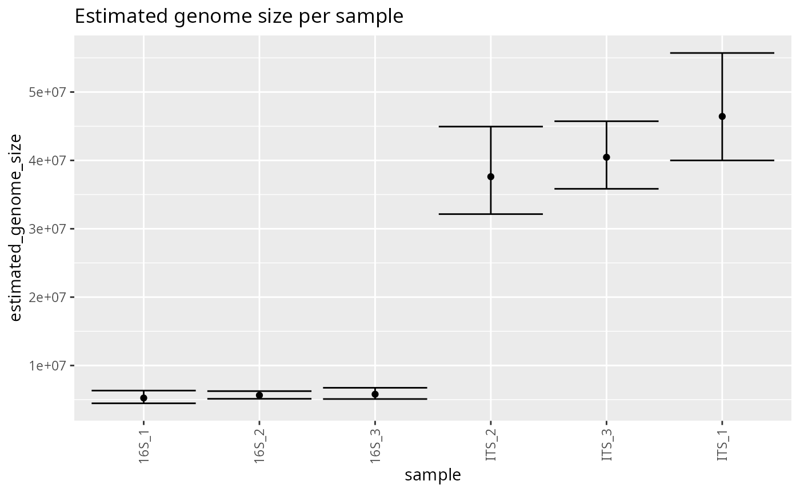
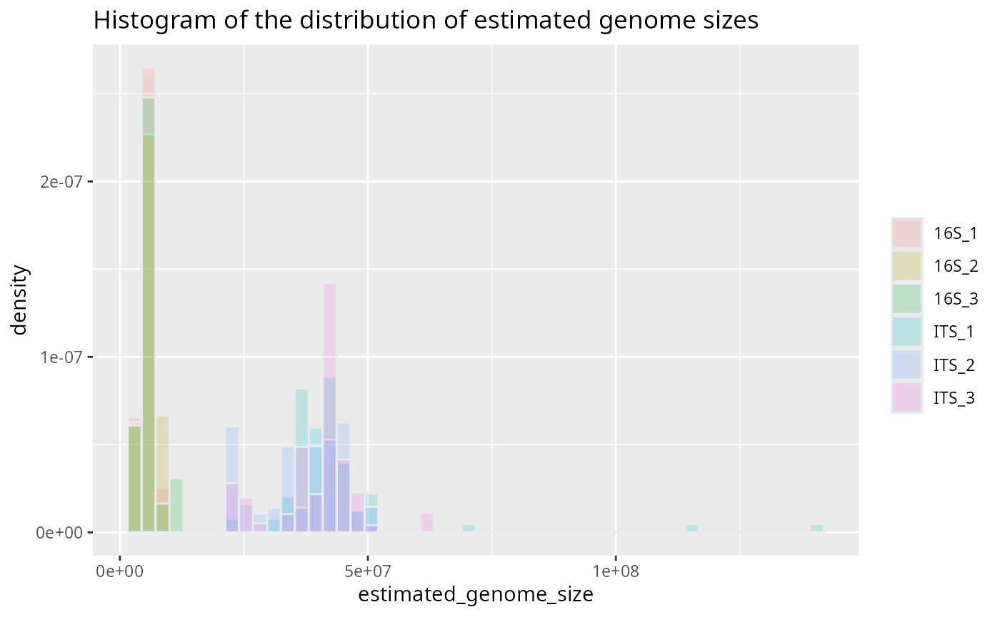
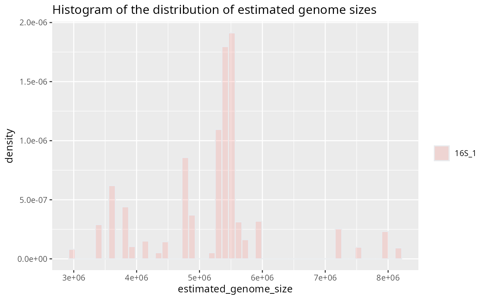
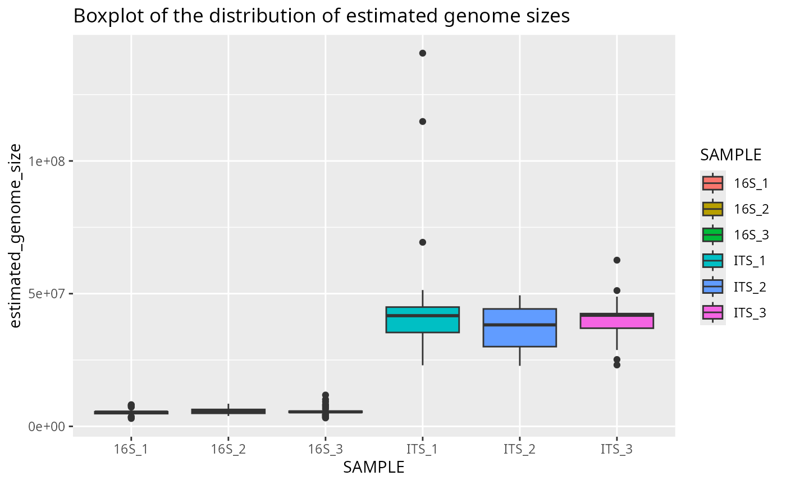
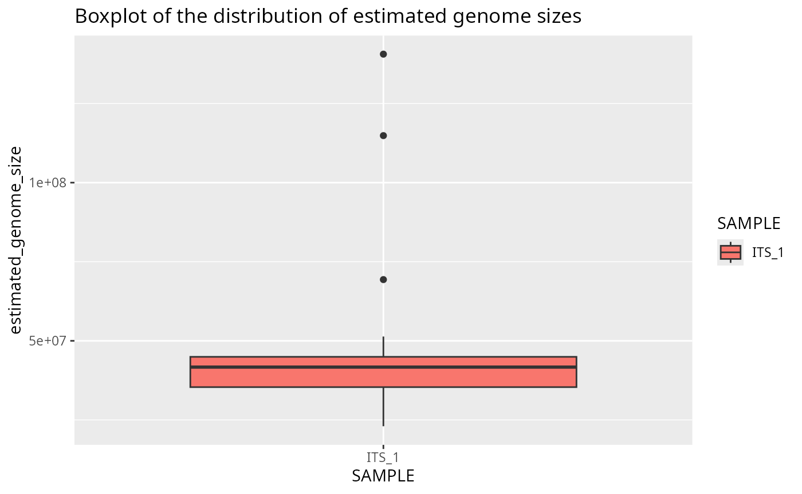
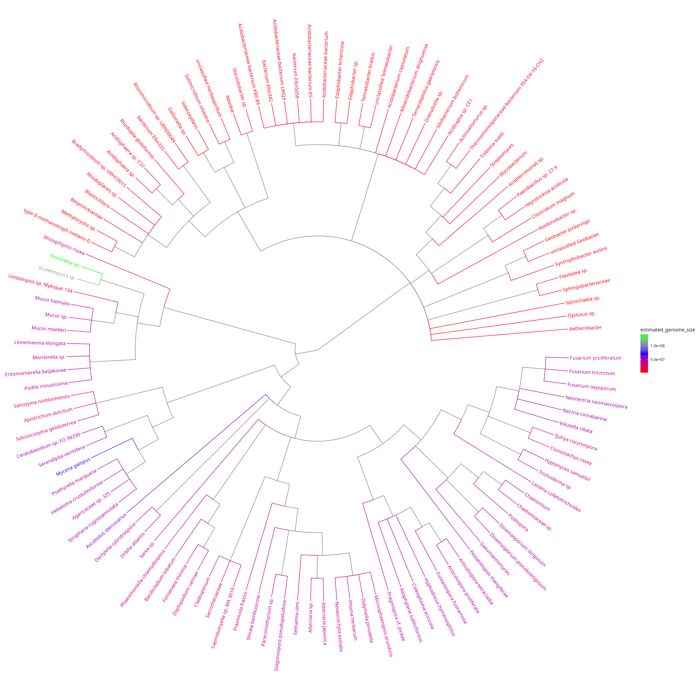

Simple tutorial using default bayesian method on example file
If not already done, download the archive containing the reference
databases and the bayesian models from zenodo.org, using
the inborutils package. You can change the
path option to where you want to download the archive
(default is current directory ‘.’):
remotes::install_github("inbo/inborutils")
inborutils::download_zenodo("10.5281/zenodo.13733183", path=".")Store the path to the archive containing the reference databases and the bayesian models:
refdata_archive_path = "path/to/genomesizeRdata_v1.0.3.tar.gz"Read the example input file from the package. This example data is a subset of the dataset from Labouyrie et al. 2023:
example_input_file = system.file("extdata", "example_input.csv", package = "genomesizeR")Load the package:
library(genomesizeR)Run the main function to get the estimated genome sizes (with the default method which is the bayesian method):
results = estimate_genome_size(example_input_file, refdata_archive_path,
sep='\t', match_column='TAXID', output_format='input',
ci_threshold = 0.5)
#############################################################################
# Genome size estimation summary:
#
# 50.55556 % estimations achieving required precision
#
Min. 1st Qu. Median Mean 3rd Qu. Max.
2973116 5404298 17307947 23865759 41709153 140613929
# Estimation status:
Confidence interval to estimated size ratio > ci_threshold OK
89 91Estimate genome sizes per sample
To get one genome size estimation per sample instead of one per
query, first run the main function with
return_posterior = TRUE to keep the full posterior
distribution of each query:
results = estimate_genome_size(example_input_file, refdata_archive_path,
sep='\t', match_column='TAXID', output_format='input',
ci_threshold = 0.5, return_posterior = TRUE)Then give the results and an abundance table (one row per query, one
column per sample) to estimate_genome_size_per_sample().
Here the abundance table is built from the COUNT and SAMPLE columns of
the example input:
samples = unique(results$SAMPLE)
otu_table = sapply(samples, function(s) ifelse(results$SAMPLE == s, as.numeric(results$COUNT), 0))
per_sample = estimate_genome_size_per_sample(results, otu_table)
#############################################################################
# Genome size estimation per sample summary:
#
# 6 samples, 0 without estimation
#
Min. 1st Qu. Median Mean 3rd Qu. Max.
5249522 5675376 21620693 23491388 39809994 46224058
# Proportion of sample abundance with an estimation:
Min. 1st Qu. Median Mean 3rd Qu. Max.
1 1 1 1 1 1 Each sample gets a mean genome size, weighted by the abundance of its queries, and a confidence interval that accounts for the uncertainty of every query:
per_sample
sample estimated_genome_size confidence_interval_lower confidence_interval_upper n_queries_used n_queries_total abundance_covered
1 16S_2 5634618 5155614 6214341 30 30 1
2 16S_1 5249522 4428505 6258701 30 30 1
3 ITS_3 40598747 35995988 46607566 30 30 1
4 ITS_2 37443735 32168521 44663036 30 30 1
5 ITS_1 46224058 39567336 55204951 30 30 1
6 16S_3 5797651 5078372 6776126 30 30 1With a phyloseq object:
results = estimate_genome_size(as.data.frame(tax_table(pseq)), refdata_archive_path,
format = 'tax_table', return_posterior = TRUE)
per_sample = estimate_genome_size_per_sample(results, as(otu_table(pseq), "matrix"),
taxa_are_rows = taxa_are_rows(pseq))See ?estimate_genome_size_per_sample for the weighting
options.
Plot the estimated genome size of each sample
The results can be visualized using the plotting functions provided. This plot shows the genome size estimated for each sample, with its confidence interval:
plotted_df = plot_genome_size_per_sample(per_sample)
Plot the distribution of query genome sizes in each sample
The plots below use the results of the main function (one estimation per query). This histogram shows the distribution of the estimated genome sizes of the queries in each sample:
plotted_df = plot_genome_size_histogram(results)
Same histogram for one sample
plotted_df = plot_genome_size_histogram(results, only_sample='16S_1')
Boxplot of query genome sizes in each sample
plotted_df = plot_genome_size_boxplot(results)
Same boxplot for one sample
plotted_df = plot_genome_size_boxplot(results, only_sample='ITS_1')
Plot a simplified taxonomic tree with colour-coded genome sizes
This tree shows the taxonomic relationships between the queries and their estimated genome sizes. The difference between bacteria (16S marker) and fungi (ITS marker) is visible.
plotted_df = plot_genome_size_tree(results, refdata_archive_path)## Untarring reference data
## Using reference data in: /tmp/RtmpWM9GPF/refdata
## Untarring taxonomy
## Using taxonomy: /tmp/RtmpWM9GPF/taxdump